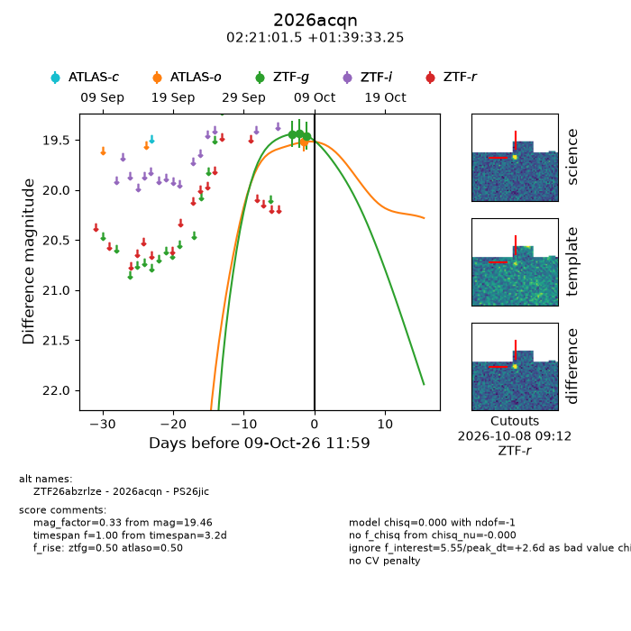
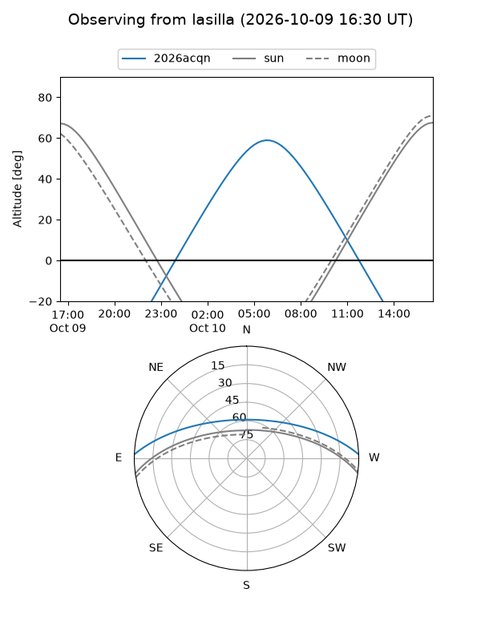
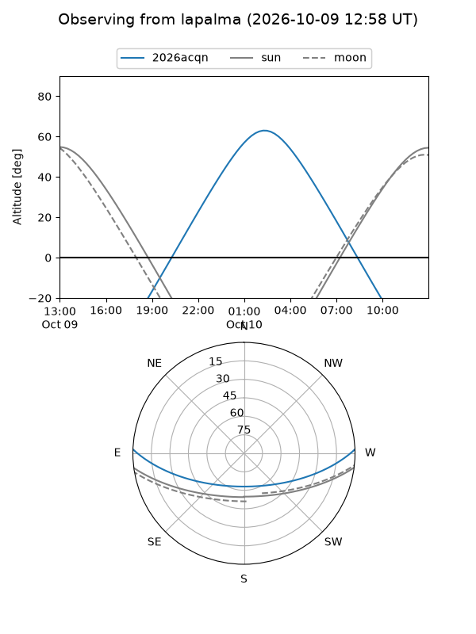
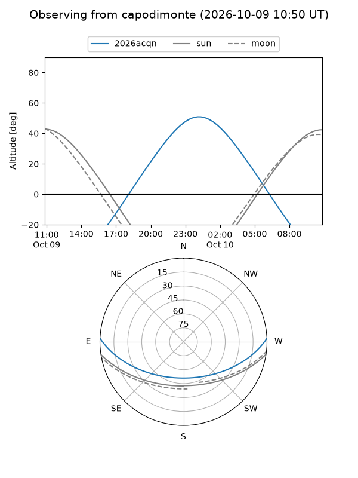
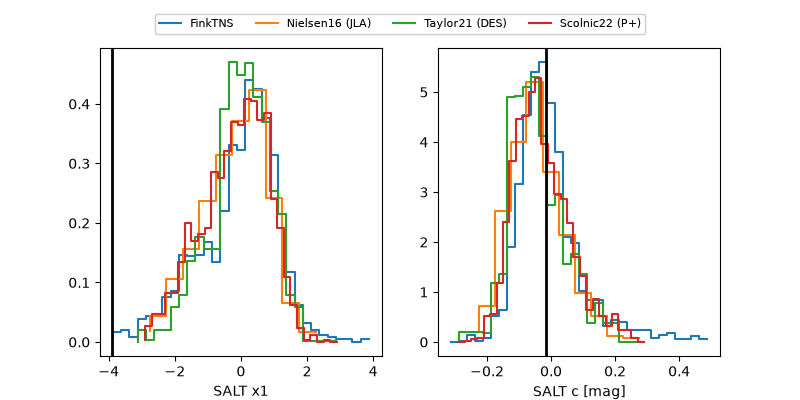

2026acqn
Target 2026acqn at 2026-10-09 12:01
Aliases and brokers:
FINK-ZTF: ztf.fink-portal.org/ZTF26abzrlze
Lasair-ZTF: lasair-ztf.lsst.ac.uk/objects/ZTF26abzrlze
ALeRCE-ZTF: alerce.online/object/ZTF26abzrlze
YSE-PZ: ziggy.ucolick.org/yse/transient_detail/2026acqn
TNS name: wis-tns.org/object/2026acqn
Direct TNS query: direct search
alt names
ZTF26abzrlze (ztf,fink_ztf)
2026acqn (tns,yse)
PS26jic (panstarrs)
Coordinates:
equatorial (ra, dec) = 35.2563,+1.65924
equatorial (HMS+DMS) = 02:21:01.51,+01:39:33.25
galactic (l, b) = (163.3526,-54.02817)
Flags:
peak dt: +2.6
Photometry:
last atlaso=19.52, ztfg=19.46
1 atlaso, 3 ztfg detections
Lightcurve

Visibility



Additional plots
